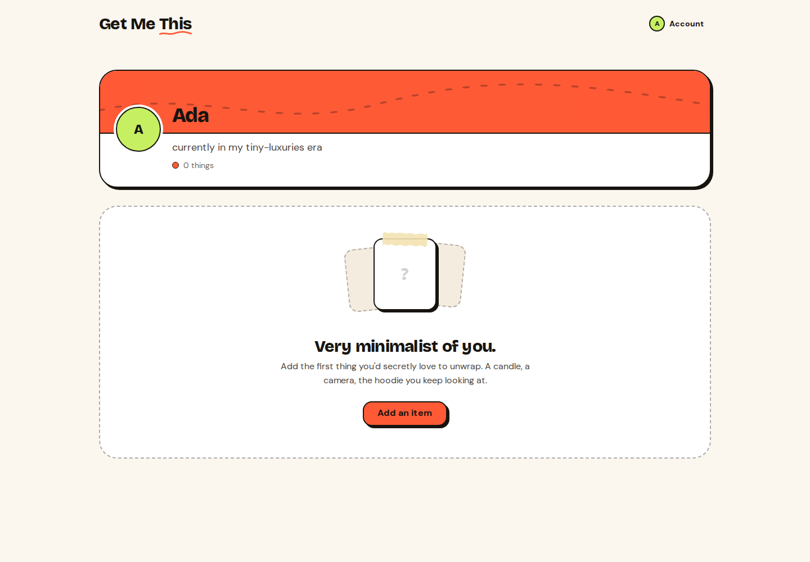
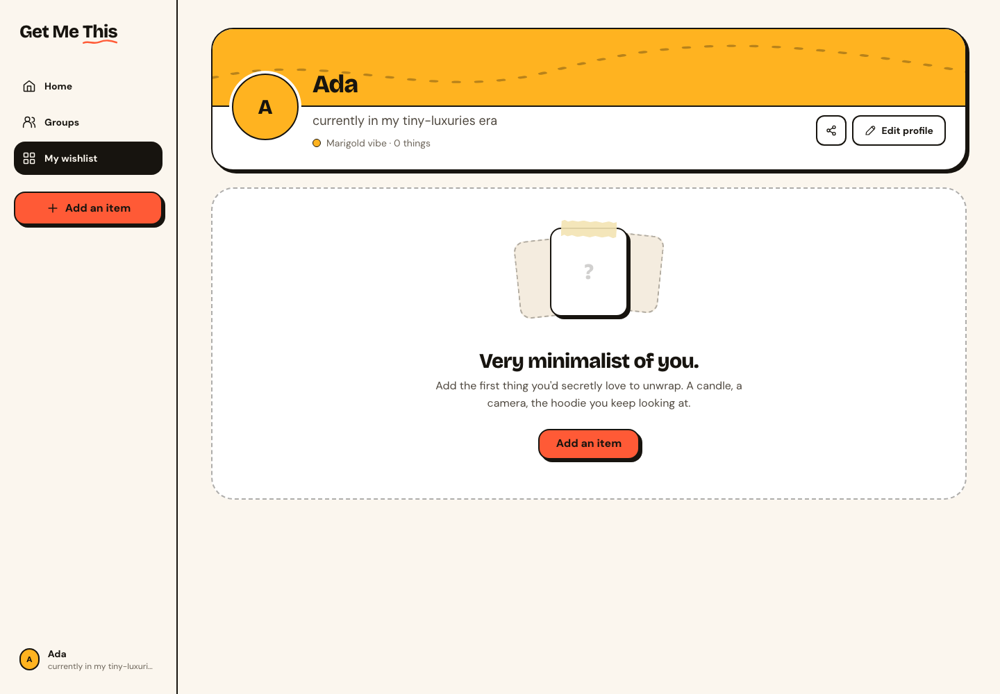

Final production-build captures. Same synthetic account, saved data, route, viewport and closed overlays. Before: unchanged review app on 3100. After: isolated app on 3200. macOS review evidence only; baseline approval and replacement must use exact-head Linux CI candidates. No golden image was updated.